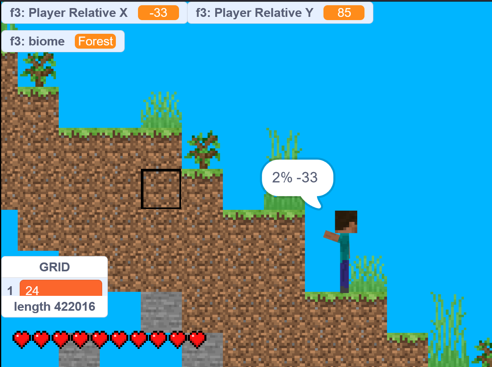

Scratch Edition Snapshot 24w18a
24w18a is here, bringing the first version of Scratch Edition to Github
Have a play with it here, and let me know of any bugs/suggested features here

Test the latest version
Well, this is the first ever snapshot for Scratch Edition, so there isn't any documentable changes, but I will do my best!
Changes
- Tweaked World Generation to follow a density function, rather than an absolute terrain height
- This means that the terrain uses 2D noise, to make it more dynamic, rather than 1D heightmap
Report a Bug/Request a feature
Report a bug/feature request below